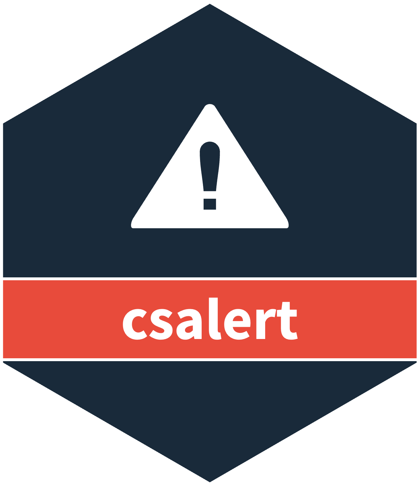

Flag the draws of a csfmt_ensemble_v4 above a historical limit
Source:R/v4_hlm.R
signal_detection_hlm_v4.RdCompares every draw of measure with the historical limit, the 99.5%
quantile of a normal fitted to the same weeks in earlier years. The method
is that of signal_detection_hlm() for a csfmt_ensemble_v3, and the
values are identical.
Value
x with the new draw matrix <measure>_hlm, which holds 1 for
null, 2 for high and NA with no limit, with a levels attribute. It
adds these columns to $data:
<measure>_hlm_thr: the limit.<measure>_hlm_prob_nulland<measure>_hlm_prob_high: the share of the draws at each level, which isNAwhen every draw isNA.
The shares give every ordinal percentile of the level codes, so the step writes no percentile column.
Each new name MUST be at most 63 bytes. A rerun on the same measure
replaces the draw matrix and the columns. The input x does not change.
Details
The baseline of a week uses the median of the draws of each earlier week.
It holds the medians 52, 104, and so on up to 52 * baseline_isoyears rows
back in the same series, each with its two neighbours. The limit is
qnorm(0.995, mean, sd) of those values. A week that lacks any of them, or
has an NA in them, gets no limit. A year back is 52 rows, so across a
53-week ISO year the baseline is one week off.
A draw at or above the limit is high, and otherwise null. A draw with
no limit, or an NA draw, gets NA. The share of draws at a level
describes the nowcast uncertainty. It is not a p-value, a posterior
probability or a false-alarm rate.
The function draws no random numbers.
The function takes no ..., so a misspelt argument is an error.
Examples
w <- cstime::dates_by_isoyearweek$isoyearweek
iyw <- w[match("2017-01", w) + 0:319]
set.seed(1)
ens <- csfmt_ensemble_v4(
data.table::data.table(location_code = "nation", isoyearweek = iyw),
id_cols = "location_code",
draws = list(cases = matrix(rpois(320 * 100, 50), nrow = 320))
)
ens <- signal_detection_hlm_v4(ens, measure = "cases")
tail(ens$data[, .(isoyearweek, cases_hlm_thr, cases_hlm_prob_high)], 3)
#> isoyearweek cases_hlm_thr cases_hlm_prob_high
#> <char> <num> <num>
#> 1: 2023-05 52.76397 0.37
#> 2: 2023-06 52.56387 0.30
#> 3: 2023-07 52.38206 0.33